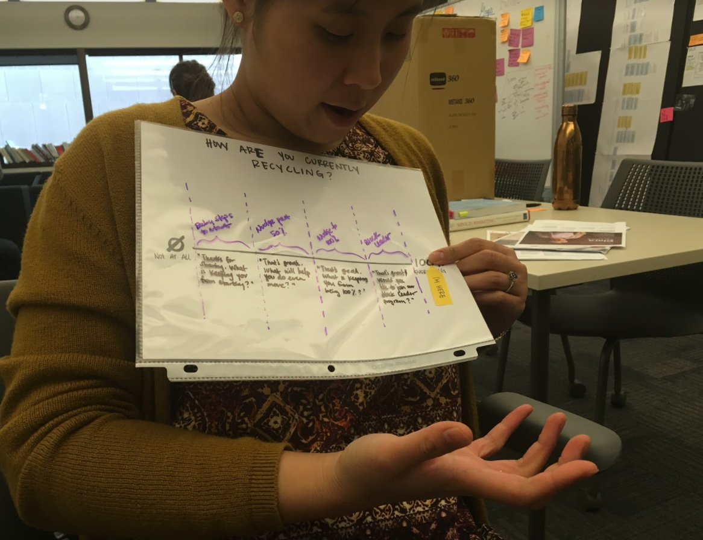

Problem
Austin Resource Recovery wants to increase the city's diversion rate, the rate at which recyclable and compostable materials are thrown into the landfill. They know that since 2015, the diversion rate has stagnated at about 42%, which has them way behind their goal of reaching 90% diversion (or zero-waste) by 2040. Through years of quantitative research, ARR realized that they can track and measure what is happening,and try different different solutions, but until they understand from the resident perspective, why residents do or don't recycle in their daily lives, they're just taking shots in the dark. Enter the Design, Technology, and Innovation Fellows.
NOTE: I chose one small sliver of the project to share for this write up, but there's a lot more where this came from. You can read the full project documentation here.
Skills and Tools Used
I jumped into this project part of the way through the synthesis phase. Before that, my team went out into the field and interviewed 48 different Austin residents in their homes about their behaviors, perceptions, and obstacles to recycling in Austin. You can read more about the research here and watch interview clips from a couple of the interviews here.
Synthesis
Nobody has the time to listen to all 52 of the 90-minute interviews we recorded, so we start with a process called debriefing. In this process one person documents all the observations, key quotes, stories, and takeaways on color-coded stickie notes for each of those categories. The stickie notes start out on posters called "participant canvasses" to facilitate a storytelling activity for each resident interviewed, but as soon as synthesis starts we begin moving them into groupings as we start finding similarities during storytelling. Pattern finding can be a long process, but once the patterns start to take shape, we can begin this process:
- Give the grouping an obvious label to summarize the main idea of the grouping.
- Ask "why" to unpack the reason this is happening.
- Write an insight a provocative statement of truth formed in response to the question.
- Transform the insight into an "opportunity area" using a “How Might We” statement to transform the insight into questions or prompts for design.
Framework

One high-level thing that emerged from all of these insights was that a resident's varying levels of recycling knowledge, system ability, and motivation, were the primary levers on whether or not a resident would be a recycler. The pattern that tested across all interviews was that residents need 2 out of 3 framework areas to act.
Concepting
Once we landed on the "How Might We" statements, we could begin designing for them. We hosted concepting sessions both with the internal core team after the research shareout, and with the local design community at an Austin Design Week workshop. When all was said and done, we ended up with over 200 concepts, and needed a way to narrow it down.
Evaluation
We used the research framework to identify which concepts had the greatest potential value. The design team went through and rated each concept along each of the criteria, and pulled out the top 25 with the highest scores. Then we went over these ideas with our stakeholders to evaluate the feasibility with respect to time, budget, and political obstacles. In the end, we decided to shoot for 8 prototypes in 8 weeks.
Prototyping
We used a sprint schedule to keep us on target to this aggressive goal. At the beginning of each sprint, we worked together to develop a problem statement to make sure we were all on the same page with respect to whether a prototype succeeds/fails. This was part of a document called a prototype plan, which also included hypotheses, user scenarios, and field testing steps. If possible, we always tried to start with a paper prototype, because it is often a sufficient enough way to test a concept early, and if it fails, fail fast.

One example of this is the Outreach Tool. We tested a paper tool which allowed residents to rank themselves on knowledge, ability, and motivation in order to help volunteers understand what types of resources or advice to give them.
Usability Testing
My team tested the paper outreach tool at two different events. It proved to be very valuable to have a tool that puts volunteers and residents on the same page about recycling, and created room for non-judgmental yet helpful conversations to happen.
Since the paper tool proved successful, we decided to creating try a digital version so that multiple outreach teams across ARR could access it at once.
As we brainstormed the digital tool, we realized changing medium opened a door to generate a more than a one-time conversation. We wanted to pursue the opportunity to capture leads at outreach events and create long-term meaningful relationships. We evaluated three different ways to build this without coding from scratch, in the spirit of rapid prototyping, and ended up choosing SurveyMonkey to prototype the concept.
When we brought the SurveyMonkey tool into the field, we learned that our assumption that digital = better, was wrong. We sat across the table from someone just using a regular paper signup form, and for every 1 person who we were able to get through the survey with, she was taking to 4 or 5 people about ARR services. Since the goal of this tool was to create meaningful interactions in which the volunteer could provide meaningful resources to the resident, we decided to scrap the form piece and just stick with the conversation tool. This meant that we needed to code a simple, digital version of the paper slider.
The sliders also store the values in a database along with a date and timestamp, so that ARR can track how residents are trending over time in the different framework areas, and plan future outreach events accordingly.
What I Learned
I learned an enormous amount during this project, but the thing that will stick with me forever is the value of qualitative research and usability testing. I wrote a whole post about this on medium. Here's a small excerpt
When you have qualitative depth of 48 people, you can decide what behavior you care to verify, and how to collect a representative sample for a population of 800,000. If you can develop strong discoveries through synthesis you can form strong hypotheses to test in this sample. And, as an analyst, when you understand the many layers, contradictions, misunderstandings of quantitative data to represent human behavior, you can empathize with your data points, see your dataset for what it is, and ask it the right questions.
NOTE: I chose one small sliver of the project to share for this write up, but there's a lot more where this came from. You can read the full project documentation here.